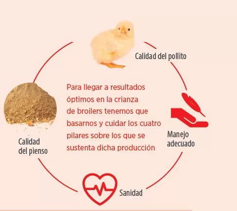
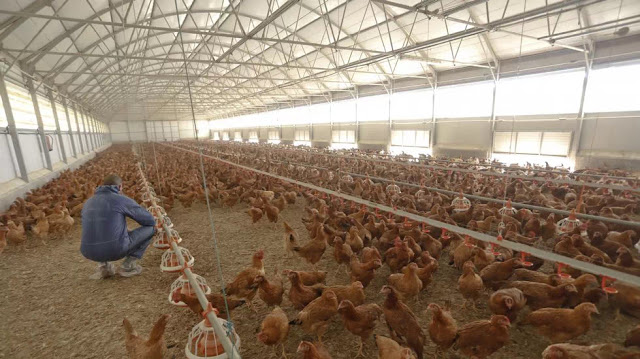

El corazón de la producción avícola sostenible en Quibdó
Nos dedicamos a la cría y producción de pollos de alta calidad, respetando el bienestar animal y el medio ambiente.
Pollo de calidad, criado sin hormonas, directo de nuestra granja a tu mesa.
Huevos frescos y orgánicos, ideales para tu alimentación diaria.
Pollo criado bajo condiciones naturales, sin aditivos ni antibióticos.
En nuestra granja, el bienestar de los animales es nuestra prioridad. Criamos a nuestros pollos en un ambiente libre de estrés, con espacio suficiente para su desarrollo.
